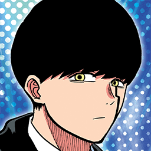

Quando Mashle foi criado e oque inspirou sua criação?
O anime mashle foi lançado oficialmente em 27 de janeiro de 2020,por seu criador Hajime Komoto e inspirado em one punch man e Harry potter.

Sobre oque esse anime é?
A história se passa em um mundo onde a magia é usada pra tudo e define o valor de uma pessoa,o protagonista Mash Burnedead,não possui magia,mas seu fisico é insano.Para proteger sua vida tranquila com seu avô,Mash precisa ir para escola de magia e se tornar o melhor aluno (um 'visionário divino').
Curiosidades!
Aqui estão 5 curiosidades que a maioria não conhcem sobre mashle!
- A música da abertura da segunda temporada,se tornou um fenômeno global no Youtube e Tiktok.
- Inicialmente,o sobrenome de Mash era Vandead mas Hajime komoto o mudou posteriormente para Burnedead.
- Mash consegue simular o voo apenas batendo as pernas em uma velocidade sobre-humana,desafiando as leis da física para "imitar" a magia dos outros alunos.
- O Mash adora profiteroles! profiteroles são doces franceses mas conhecidos aqui no Brasil como "Carolina".
- Quando o anime foi lançado,as vendas de profiteroles no japão aumentou e confeitarias japonesas relataram estoques esgotados e picos de vendas inéditos!.